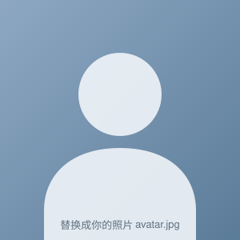
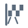
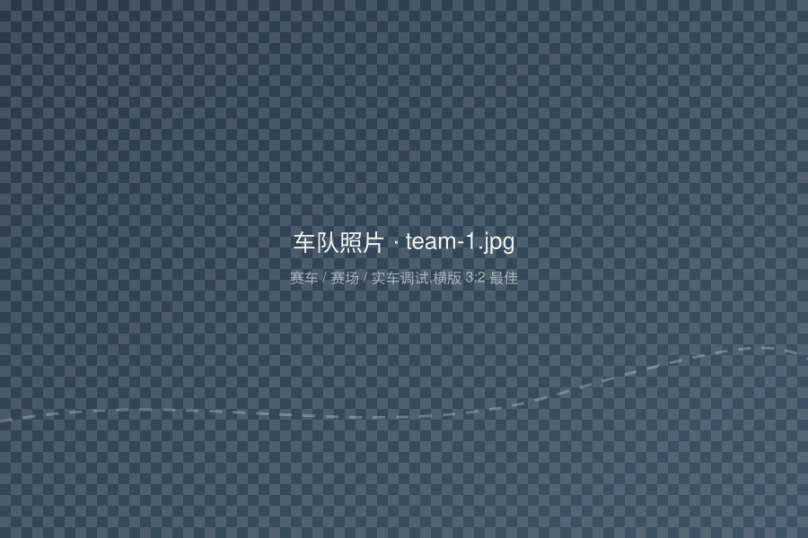
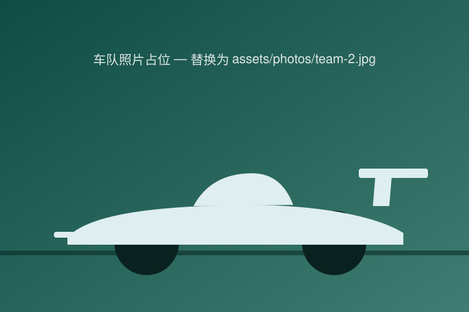

Battery SOH Estimation with Lightweight Deep Learning and On-MCU Deployment (title TBD)
CEVVE 2025 Oral

M.S. student @ Tongji University · Autonomous Driving AI & Edge AI
I am a M.S. student in Vehicle Engineering (Automotive Electronics) at Tongji University. My research focuses on deep-learning-based battery SOH / SOC estimation and edge-AI model compression & deployment. I have interned at Horizon Robotics (autonomous-driving planning & control, multimodal / VLM algorithms) and Schaeffler · Vitesco (embedded software), and served as planning & control lead of a driverless Formula Student team, winning national second prizes in 2023 and 2024. I received my B.Eng from Jilin University in 2025 (rank 3/64, top 5%).
Hover / tap the bars for details — click to jump to the entry below.
Research on deep-learning-based battery SOH / SOC prediction and edge-AI model compression & deployment. Keywords: Deep Learning / Transformer / Time Series Modeling / Edge AI / Model Compression.
Major rank 3/64 (top 5%). Coursework: computer science fundamentals, Python, control engineering, sensing technology, vehicle theory, automotive networks, C/C++, digital / analog circuits.

Jilin University Driverless Formula Racing Team (吉智无人驾驶方程式赛车队)
